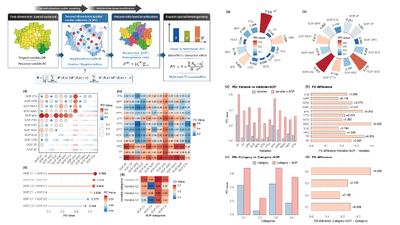
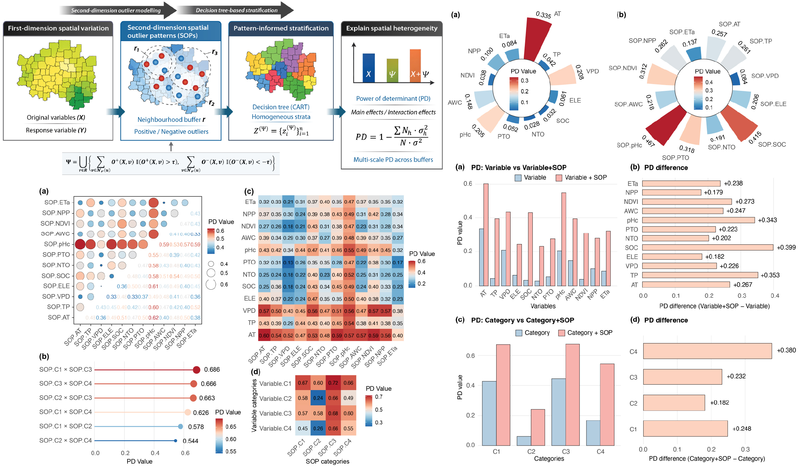

Publication News
Journal Publications in 2026
An evolving record of my journal publications in 2026 and the ideas behind them.

Spatial Outliers and Heterogeneity
On 11 June 2026, my paper Spatial outliers as a pattern determinant for explaining heterogeneity was published in the International Journal of Geographical Information Science (IJGIS), which has a 2024 Impact Factor of 5.1.
The study introduces a second-dimension outlier-driven heterogeneity (SOH) model. Rather than explaining spatial heterogeneity only through the values and gradients of conventional covariates, the model also captures local spatial outlier configurations as multi-scale spatial outlier patterns. These patterns are then incorporated into a stratification-detection workflow to evaluate their individual effects, interactions, and scale dependence.
Using Australian barley production as a case study, the results show that spatial outlier patterns can strengthen the explanation of heterogeneity. Their interactions with one another and with original spatial variables also produce synergistic gains in explanatory power, demonstrating how irregular local structures can become meaningful determinants of broader spatial patterns.
Ren, K., Song, Y., Yang, X., Wang, X., Chen, M., & Yu, Q., 2026. Spatial outliers as a pattern determinant for explaining heterogeneity. International Journal of Geographical Information Science, pp. 1–23.
Publication Record
